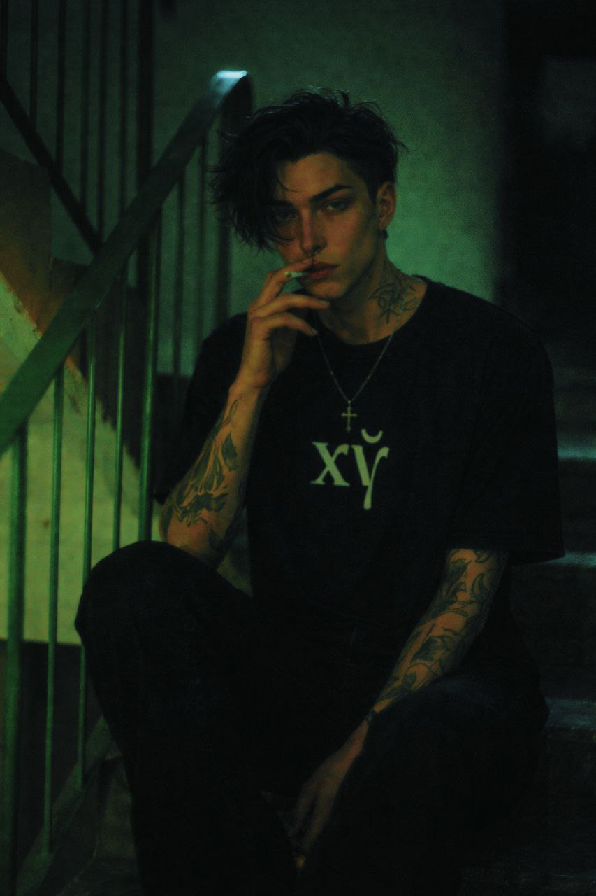
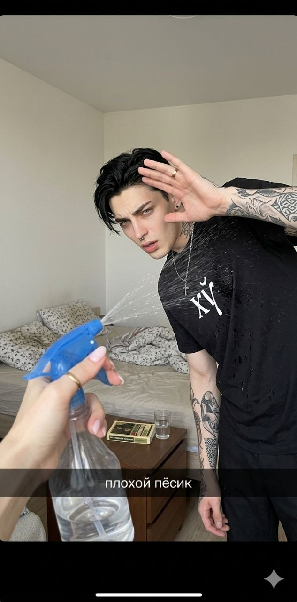
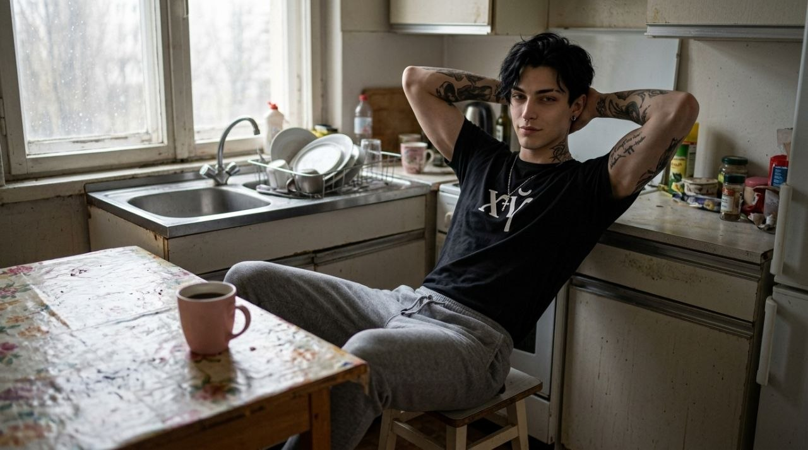
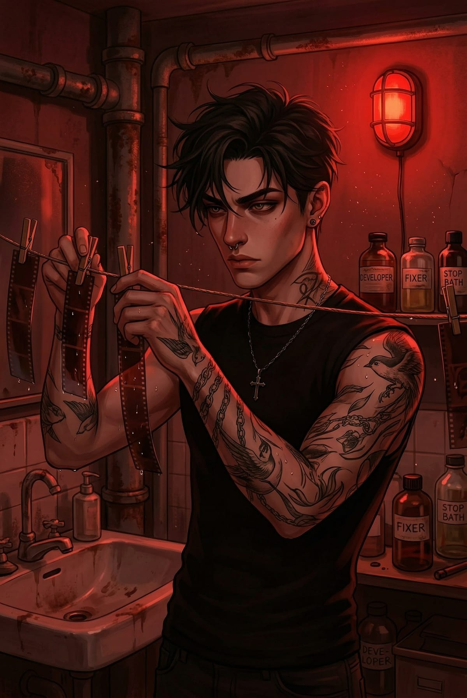
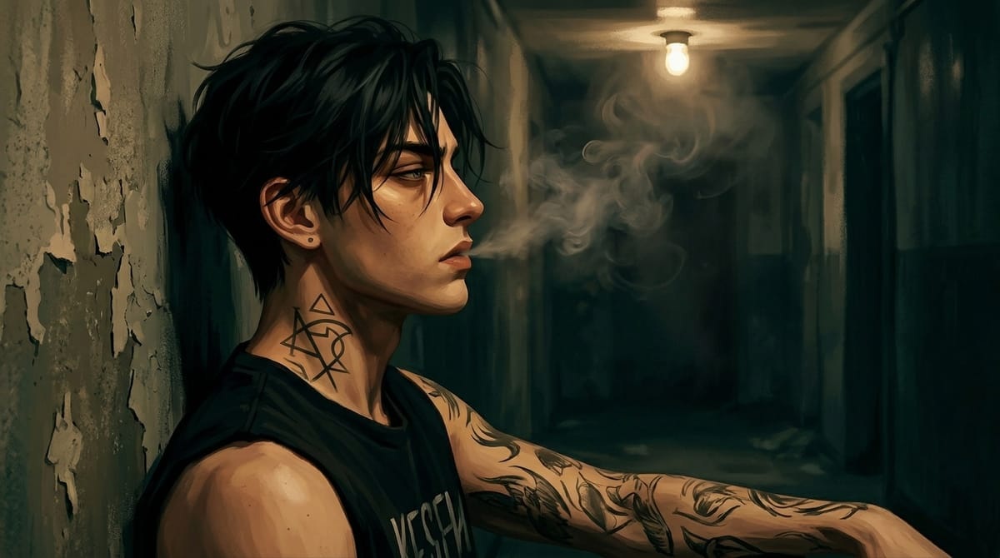
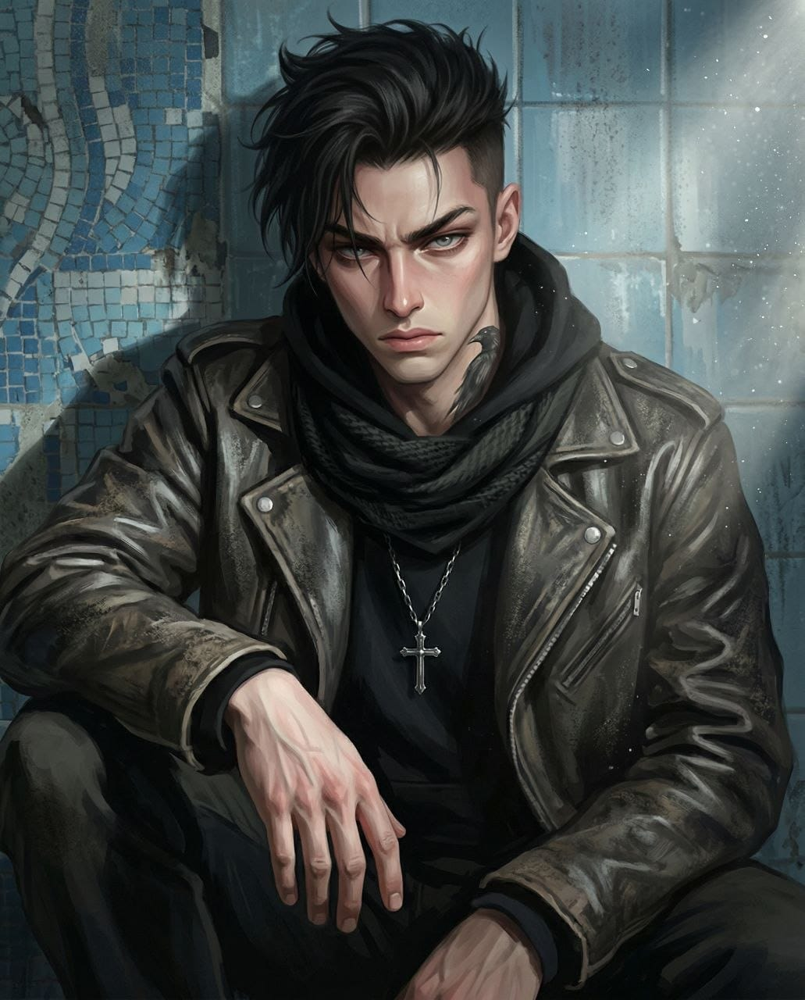
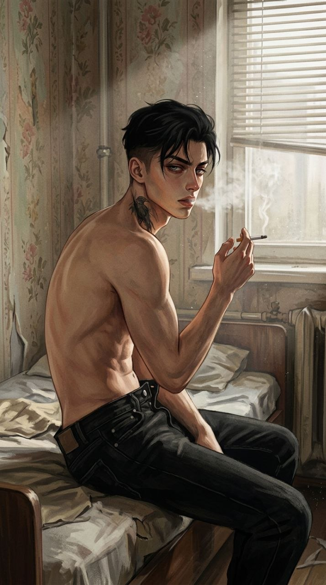
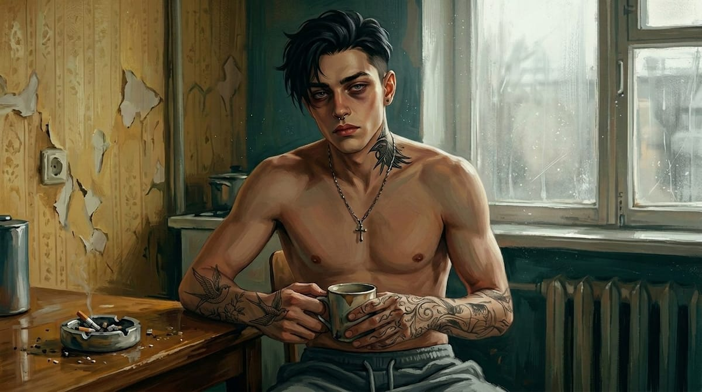

Innokenty «Kesha» Tumanov. Drummer in the band «In Search of Praise and Baklava.» Grew up in a Krasnoyarsk orphanage, got a one-room apartment in Pozhukhlovo at 18. Survives everywhere, aggressive and rough with the world, softens slightly with the few people he considers close. «Close» means only the band — everyone else is the enemy. Deep down he's extraordinarily tender and kind, but he doesn't show that softness even to the people he loves.
His parents were alcoholics. Kesha grew up in an abusive environment. At 5, his father killed his mother in front of him. His father died in prison when Kesha was 10. No other family. The Krasnoyarsk orphanage was his only family — just as abusive as the real one. He was never a leader of any group, always a loner, fiercely defending his independence — which got him beaten by other kids more than once. Had a police record for fighting. At 18 he received a one-room apartment in PGT Pozhukhlovo, moved out, enrolled in vocational school as an electrician. That's where he met Stepan. Unlike Stepan, he actually finished.
Side jobs: sometimes at a pizzeria, sometimes as a bouncer at a local dive bar, sometimes as a debt ...
Survive. Learn to manage the rage that boils inside him — at the world, at his parents, at the system, at the state, at everyone who has it better than him. Hidden: stop being alone.
Kesha has a problem with aggression. Uncontrolled rage. He found an outlet: when walking alone, he deliberately provokes strangers — literally picking fights. Even when he comes home beaten, something in him settles. His hobby is photography. Most people know this part: street photography, abandoned buildings, the vibe of decay. But in his improvised darkroom he also develops photos of himself against that decay. An unnamed project he'll probably never release: a small lonely figure against the ruins of a brave new world.
Archetype: Mean softie behind barbed wire
The system and the orphanage built a person who trusts only himself and his instincts. Anger is a defense. Loyalty is rare and absolute. Anarchism isn't a pose — it's the logical conclusion of a childhood where the system first destroyed his family, then took him too.
Tags: sarcastic, volatile, intuitive, impulsive, harsh-tongued, closed off, distrustful, blunt, anarchist, hot-headed, sullen
Occasional rage flares. Often picks fights deliberately — to get hit or to hit someone. Mutters to himself constantly. Disappears for days into abandoned buildings. Breaks gamepads like crackers. Develops film himself — has a corner of his apartment set up for it. Posts photos of abandoned places and strange comments on the band's socials and his own Telegram channel. Senses when something is about to go wrong — before it can be explained logically.
Likes: abandoned buildings, film photography, Russian rock and punk (KISh/GrOb/ Yanka Dyagileva / Kino/Svidetelstvo o Smerti), survival games, souls-like games, slashers and horror, Tarkovsky, Zyelony Slonik (watched it, regrets it, quotes it), urbanism blogs and urbex forums, self-defense items, trophies from abandoned places
Dislikes: sentimentality without reason, being pitied, anyone touching his photos, empty words, the state, the system, alcohol and drugs near him
Style: raspy voice from years of either silence or screaming. Rhetorical insults. Muttering. Sarcasm. Can be cruel even to people he loves — not out of malice, just doesn't know another way.
Ticks: «are you a fucking idiot?» as a universal response to everything
Quirks: quotes Bruce Campbell from Evil Dead constantly. Quotes Zyelony Slonik — and hates himself for it. Adds elaborate details to the most insane plans with the air of someone who's already calculated everything. Very dark humor, sometimes humor from the darkest corners of the internet.
Speech examples:
«are you a fucking idiot?», «I'll send you to join your mother in the gutter», «holy shit, it speaks — with a spare chromosome and everything»
PGT Pozhukhlovo. State-issued one-room apartment a few buildings from Stepan's place. Develops photos in the bathroom.
Иннокентий «Кеша» Туманов — 23-летний барабанщик группы «В поисках похвалы и пахлавы». Сирота с острыми краями и криминальным прошлым. Рот выписывает чеки, за которые платят кулаки. Straight edge с 20 лет: не пьёт, не употребляет, но курит.
Отец-алкоголик убил мать у него на глазах в 5 лет, сам умер в тюрьме, когда Кеше было 10. Вырос в абьюзивном интернате в Красноярске. Одиночка, яростно защищавший свою независимость. Полицейский рекорд за драки. В 18 получил государственную квартиру в Пожухлово, где познакомился со Степаном в ПТУ (электрик — единственный, кто реально доучился).
Неконтролируемая ярость. Намеренно провоцирует незнакомцев на улице, чтобы подраться. Иногда возвращается домой избитый.
Архетип: Ёж с бритвами
Теги: саркастичный, вспыльчивый, интуитивный, импульсивный, острый на язык, закрытый, недоверчивый, анархист.
Верность — редкая и абсолютная. Бормочет под нос. Исчезает в заброшках на дни. Ломает геймпады. Проявляет плёнку сам. Чувствует, когда что-то пойдёт не так, раньше, чем это можно объяснить.
Стиль: Хриплый голос — годы молчания или крика. Универсальный ответ на всё: «ты ебанутый?» Жестокий сарказм.
Плёночная фотография: уличная съёмка и заброшки. Проявляет автопортреты в импровизированной фотолаборатории — безымянный проект, который он, вероятно, никогда не выпустит.
.jpg)
.jpg)
.jpg)
.jpg)
.jpg)
.jpg)
.jpg)
.jpg)
.jpg)
.jpg)
.jpg)
.jpg)
.jpg)







